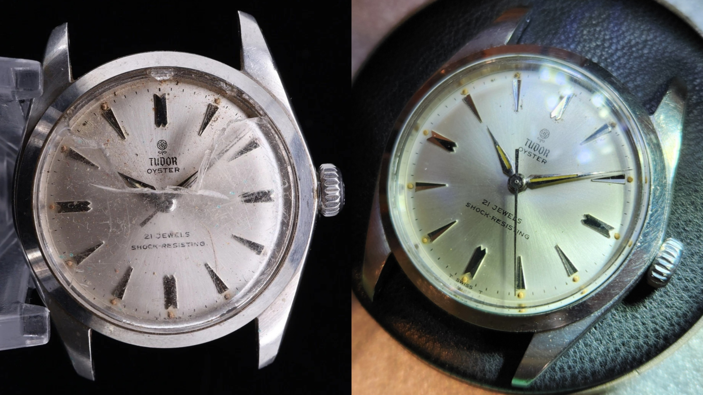
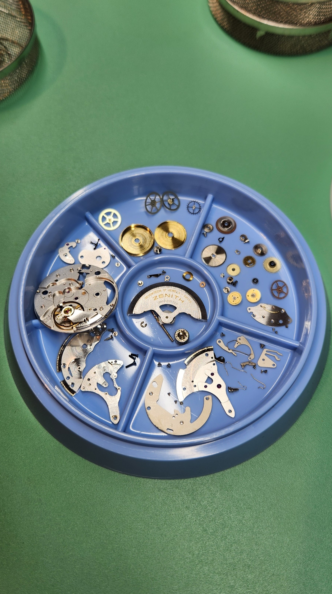
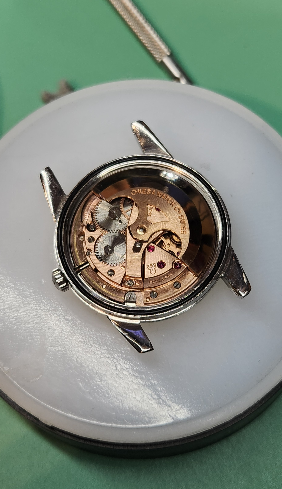
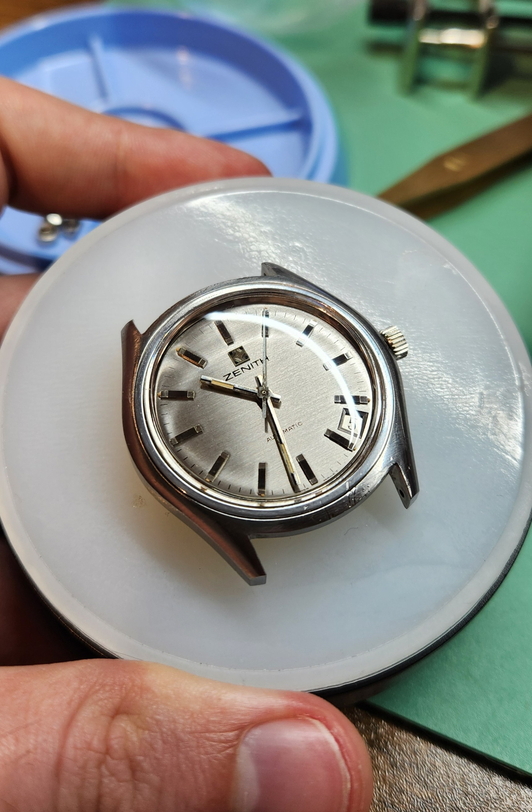
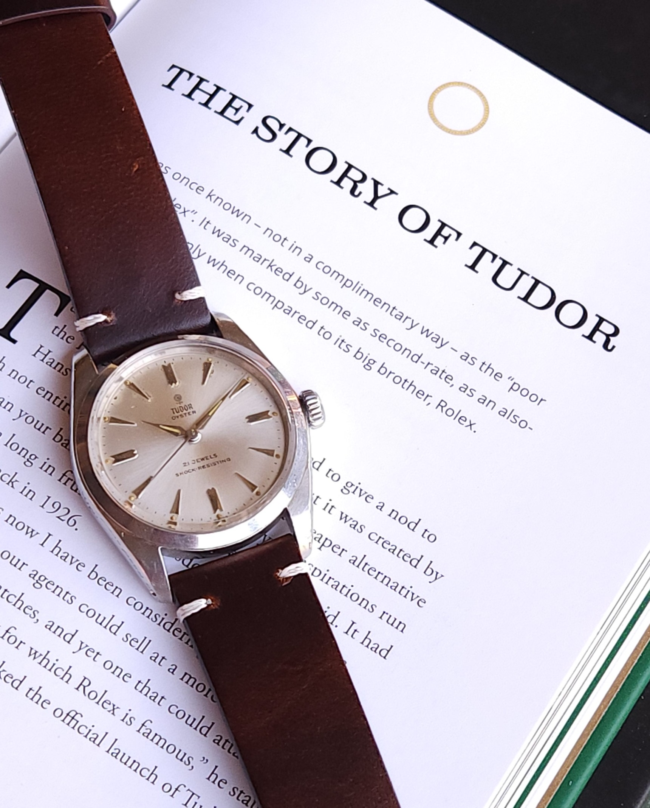

Watchmaking & Restoration
Careful hands. Mechanical precision.
Independent watchmaking, servicing and restoration of mechanical timepieces.
View My WorkWhat I Do

Servicing
Complete servicing of mechanical watch movements to restore reliable and accurate operation.

Restoration
Bringing vintage and worn timepieces back to life while preserving their character.
Recent Work

Omega Calibre 562
Automatic movement restoration

Zenith Calibre 2572
Mechanical service

Tudor 7934
Restoration
About A Watch Mechanic
A small independent watchmaking practice focused on mechanical watches, restoration and the craft behind them.
Every watch presents its own challenge, and every restoration is approached with patience, care and respect for the original timepiece.
About MeHave a Watch That Needs Attention?
Get in touch to discuss your watch and what it may need.
Contact Me